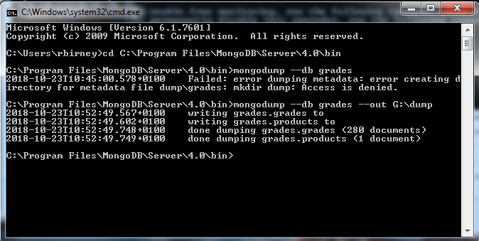
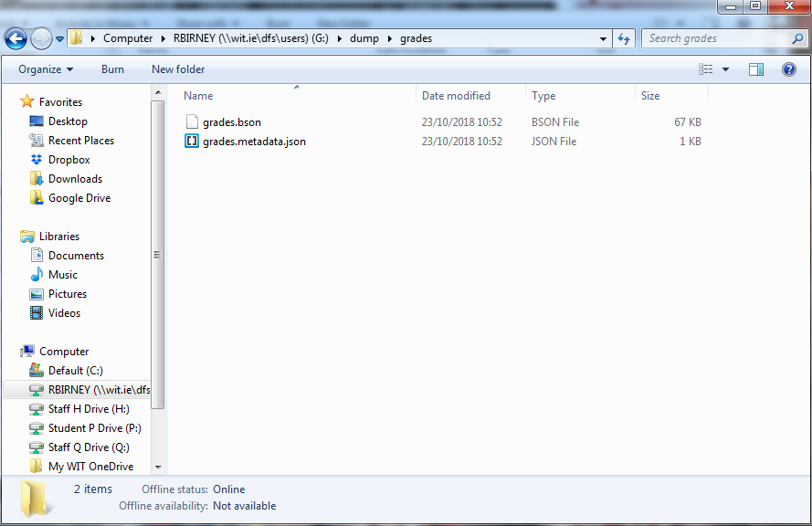
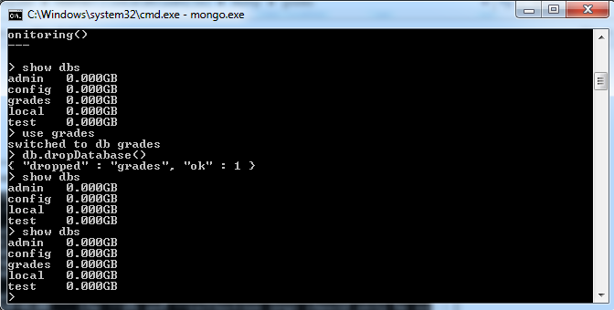
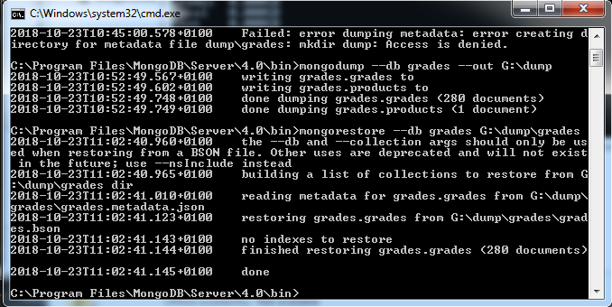

This lab examines the functions used to backup and restore data in MongoDB.
The mongodump function is used to create a backup of a whole database (or a single collection). The mongodump command should be run in the system command prompt, not in the mongodb shell.
The command shown here will create a backup of the grades database.
mongodump --db gradesTo create a backup of a single collection in a database, you would use the following command:
mongodump --db college --collection studentsThe mongodump function outputs a folder containing a BSON (binary JSON) file and a metadata file. You may need to specify an output folder for the function, especially on the college computers where you don't have write access for the C: drive. Use this syntax to specify an output folder:
mongodump --db grades --out G:\dumpYou should see the following output after a successful dump operation:

Confirm that the files have been created in the folder you specified.

We will now restore the backup we created to confirm that it was successful. First, we need to drop the grades database.
Execute the following commands from the mongo.exe client (one at a time)
show dbs
use grades
db.dropDatabase()
show dbsYou should see the following output:

Run this command from the system command prompt:
mongorestore --db grades G:\dump\gradesNote that the location should match the location of your mongodump output folder.
You should see the following output:

Back in the mongo.exe client, run the show dbs command again. You should see the following output, confirming that the grades database has been restored. Run a find() operation to confirm that the data can be read.